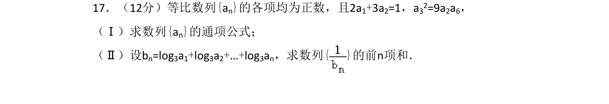
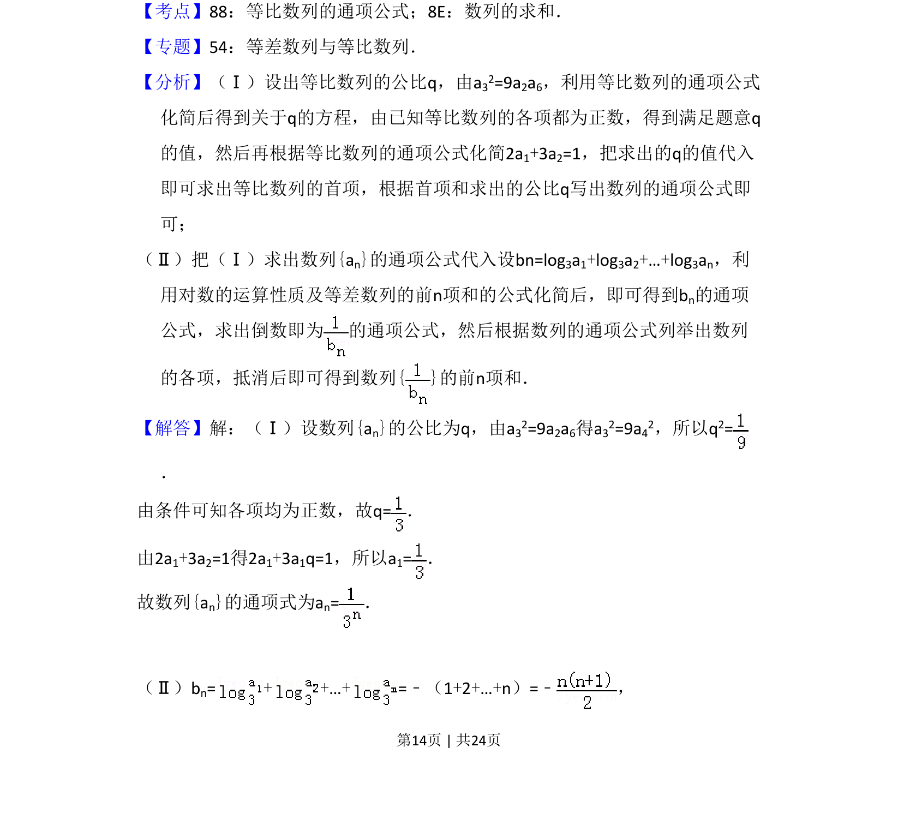
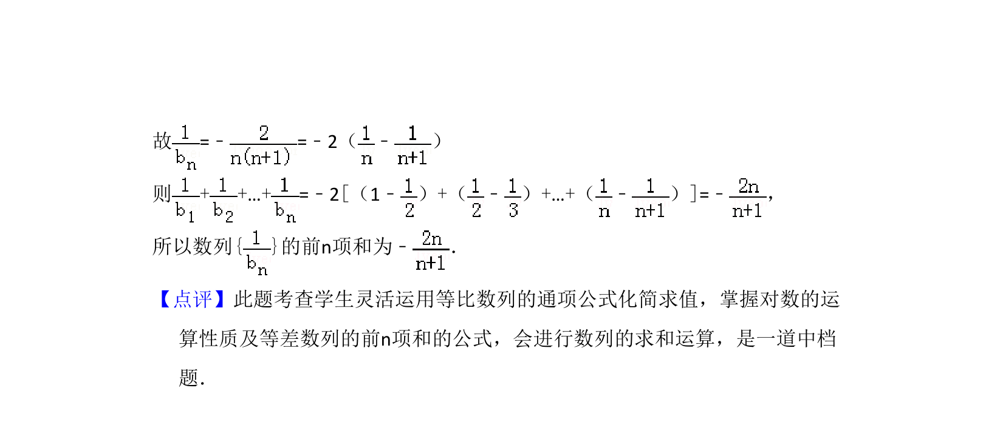

考点：等比数列通项公式 数列求和 裂项相消法 对数运算

求等比数列通项公式及利用对数运算和裂项相消法求数列前n项和


📄 原 PDF 第 14 页：
素材/真题/吉林/2008-2024·（吉林）数学高考真题/2011年高考数学试卷（理）（新课标）（解析卷）.pdf
17．（12分）等比数列{an}的各项均为正数，且2a1+3a2=1，a32=9a2a6， （Ⅰ）求数列{an}的通项公式； （Ⅱ）设bn=log3a1+log3a2+…+log3an，求数列{ }的前n项和．
【考点】88：等比数列的通项公式；8E：数列的求和．菁优网版权所有 【专题】54：等差数列与等比数列． 【分析】（Ⅰ）设出等比数列的公比q，由a32=9a2a6，利用等比数列的通项公式 化简后得到关于q的方程，由已知等比数列的各项都为正数，得到满足题意q 的值，然后再根据等比数列的通项公式化简2a1+3a2=1，把求出的q的值代入 即可求出等比数列的首项，根据首项和求出的公比q写出数列的通项公式即 可； （Ⅱ）把（Ⅰ）求出数列{an}的通项公式代入设bn=log3a1+log3a2+…+log3an，利 用对数的运算性质及等差数列的前n项和的公式化简后，即可得到bn的通项 公式，求出倒数即为 的通项公式，然后根据数列的通项公式列举出数列 的各项，抵消后即可得到数列{ }的前n项和． 【解答】解：（Ⅰ）设数列{an}的公比为q，由a32=9a2a6得a32=9a42，所以q2= ． 由条件可知各项均为正数，故q=． 由2a1+3a2=1得2a1+3a1q=1，所以a1=． 故数列{an}的通项式为an=． （Ⅱ）bn=+ +…+=﹣（1+2+…+n）=﹣ ，